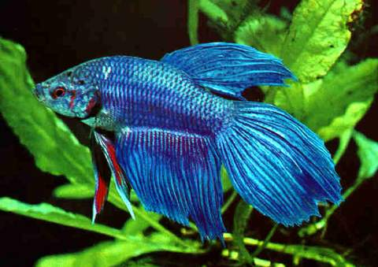

VEIL TAIL
Veil tails are one of the most common and popular betta fish breeds in the hobby.
Learn MoreVeil tails are one of the most common and popular betta fish breeds in the hobby.
Learn MoreThe halfmoon betta fish gets its name from its large, semicircle or capital ‘D’ shaped tail.
Learn MoreThe elephant ear betta or dumbo betta fish gets its name from its large pectoral fins.
Learn MoreAssuming you mean Betta splendens, the actual breeding isn't necessarily all that difficult to accomplish if the fish are cooperative, but raising the fry is very challenging, most especially so if you are a beginner.
The act of betta fish mating and reproducing can be quite fast, taking only a short time, or it might take several hours. After the male and female stop embracing, it is best to take the female out of the tank, as she may eat the eggs she has just produced.
When a male betta fish is ready to breed, he will create a bubble nest. These bubble nests will float on the very top of the tank, and appear like a cluster of small bubbles. Once made, male betta fish will often stay under the nest as they wait for a female to mate with.
This guide is for the aquarium hobbyist that is just starting out at breeding bettas. A single pair can produce more than 400 eggs at a time, however not every single fry will make it to adulthood. That is why it's essential to learn these important steps, to ensure sure you have a successful batch.
Should I remove betta bubble nest? No, you should not remove the betta bubble nest, as it serves as a safe haven for the betta fish's eggs and is an important part of the breeding process. It's best to leave it be.
After female betta fish mate, the females will lay eggs. The eggs come from what is often termed an "egg spot," seen encircled above. The spot looks like a grain of salt, and is actually the ovipositor tube where the eggs will come out of. This is a way to identity a female betta fish if you are unsure of the sex.
Betta fish are usually ready to breed from 4 months of age till 12 months as this is their peak breeding age. A female betta with the white spot on her underbelly.
I recommend that the female is only breed one time. But if you want to breed the female again, I suggest you let the female's fin heal completely and let the female rest for two weeks usually. In this two weeks the female would also have reproduced the eggs.
You can technically keep two male bettas in a tank together if there is a divider. It's important to note that this can still cause immense stress in each animal. They'll want to attack any male they see, even if there's a divider between them. If you're starting with no betta fish, you actually have an advantage.
Fertilized betta fish eggs will initially remain white in colour, although may turn to very light yellow after around 3 hours. The grey spot of the blastula (or early embryo) should also appear around this time [6]. As development continues, the fertilized betta fish eggs may start to become a slightly darker yellow.